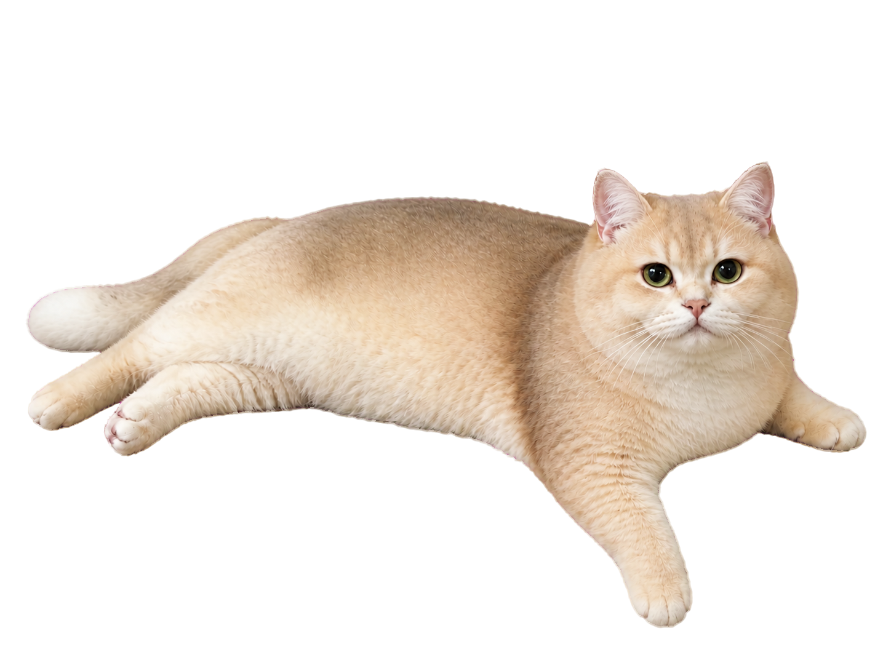
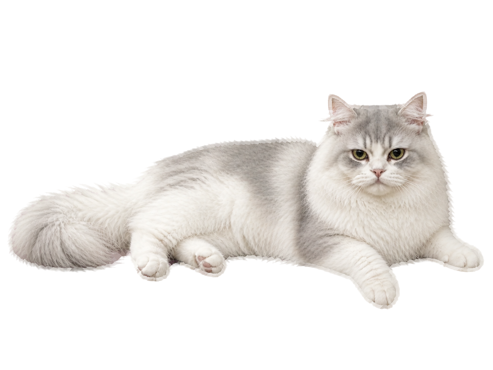

Connect at least three matching tiles
Local save: waiting for the first save
Connect at least three matching tiles horizontally, vertically, or diagonally. Drag back to the previous tile to undo a step. Cleared tiles refill in place.
Your last valid route stays on the board. End the next route on any tile from that earlier route to create a rendezvous and earn four bonus journey points. New players get a three-step guided route, then eight calibration moves.
For keyboard or screen-reader play, focus and activate tiles one by one, then choose Submit path. Press Escape or choose Cancel path to abandon the current route.